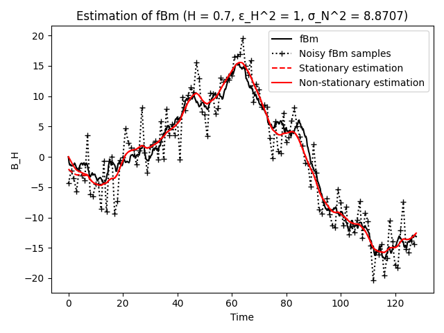
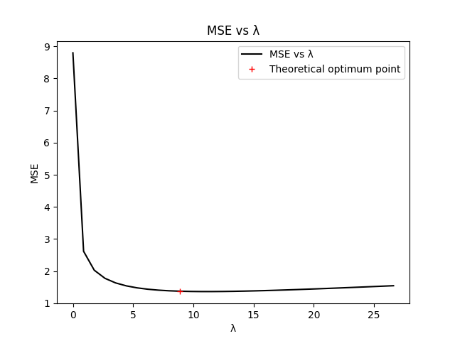
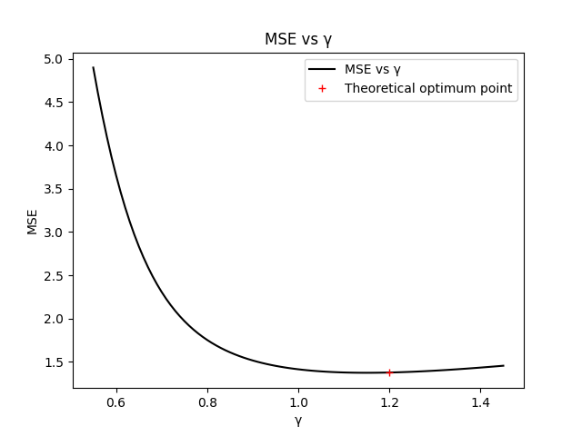
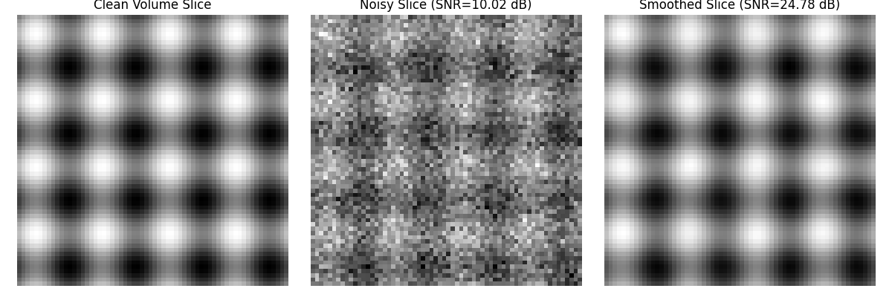
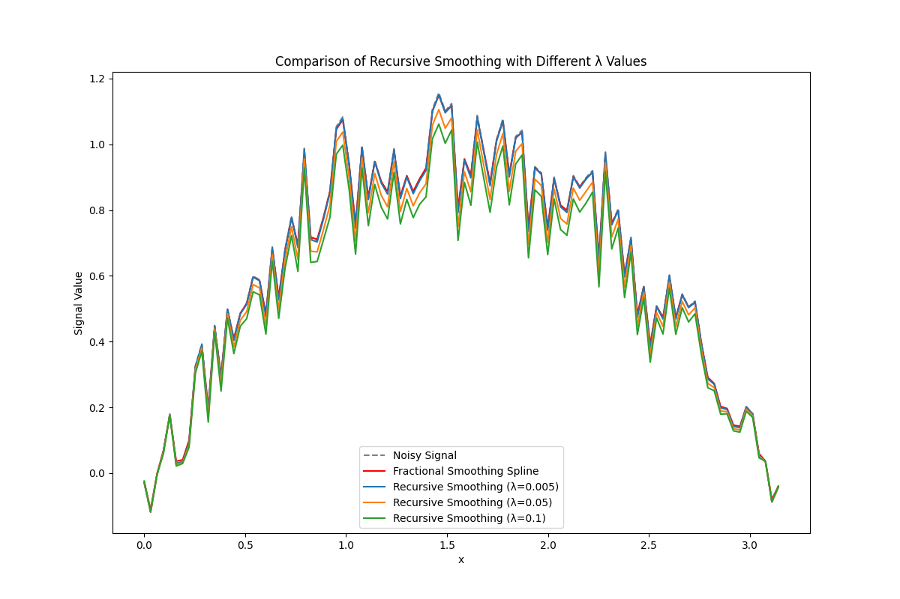

Smooth Module#
We use the smooth module to smooth N-dimensional data.
You can download this example at the tab at right (Python script or Jupyter notebook.
1D Fractional Brownian Motion#
A realization of an fBm process of length N is generated and corrupted with noise. The sequence is then denoised and oversampled by a factor m using the optimal fractional-spline estimator.
import math
import numpy as np
import matplotlib.pyplot as plt
from splineops.smooth.fBmper import fBmper
from splineops.smooth.smoothing_spline import smoothing_spline
from splineops.smooth.smoothing_spline import smoothing_spline_nd
from splineops.smooth.smoothing_spline import recursive_smoothing_spline
# Define program constants
m = 4 # Upsampling factor
N = 256 # Number of samples
# Default values
default_H = 0.7
default_SNRmeas = 20.0
default_verify = '0'
# Enter Hurst parameter [0 < H < 1] (default: 0.7) >
H = 0.7
# Enter measurement SNR at the mid-point (t = {N/2}) [dB] (default: 20.0) >
SNRmeas = 20.0
# Create pseudo-fBm signal
epsH = 1
t0, y0 = fBmper(epsH, H, m, N)
Ch = epsH ** 2 / (math.gamma(2 * H + 1) * np.sin(np.pi * H))
POWmid = Ch * (N / 2) ** (2 * H) # Theoretical fBm variance at the midpoint
# Measurement: downsample and add noise
t = t0[::m]
y = y0[::m]
sigma = np.sqrt(POWmid) / (10 ** (SNRmeas / 20))
noise = np.random.randn(N)
noise = sigma * noise / np.sqrt(np.mean(noise ** 2))
y_noisy = y + noise
# Find smoothing spline fit
lambda_ = (sigma / epsH) ** 2
gamma_ = H + 0.5
ts, ys = smoothing_spline(y_noisy, lambda_, m, gamma_)
# Add non-stationary correction term
cnn = np.concatenate(([1], np.zeros(N - 1))) # Normalized white noise autocorrelation
tes, r = smoothing_spline(cnn, lambda_, m, gamma_)
r = r * ys[0] / r[0]
y_est = ys - r
# Calculate MSE and SNR
MSE0 = np.mean(noise ** 2) # Measurement MSE
MSE = np.mean((y_est[::m] - y0[::m]) ** 2) # Denoised sequence MSE
MSEm = np.mean((y_est - y0) ** 2) # Denoised and oversampled signal MSE
SNR0 = 10 * np.log10(POWmid / MSE0)
SNR = 10 * np.log10(POWmid / MSE)
SNRm = 10 * np.log10(POWmid / MSEm)
print(f'Number of measurements is {N}, oversampling factor is {m}.')
print(f'mSNR (SNR at the mid-point) of the measured sequence is {SNR0:.2f} dB.')
print(f'mSNR improvement of the denoised sequence is {SNR - SNR0:.2f} dB.')
print(f'mSNR improvement of the denoised and oversampled sequence is {SNRm - SNR0:.2f} dB.')
# Plot the results
plt.figure()
plt.plot(t0[:len(t0)//2], y0[:len(y0)//2], 'k', label='fBm')
plt.plot(t[:len(t)//2], y_noisy[:len(y_noisy)//2], 'k+:', label='Noisy fBm samples')
plt.plot(ts[:len(ts)//2], ys[:len(ys)//2], 'r--', label='Stationary estimation')
plt.plot(tes[:len(tes)//2], y_est[:len(y_est)//2], 'r', label='Non-stationary estimation')
plt.legend()
plt.title(f'Estimation of fBm (H = {H}, ε_H^2 = {epsH}, σ_N^2 = {sigma ** 2:.4f})')
plt.xlabel('Time')
plt.ylabel('B_H')
plt.tight_layout()
plt.show()

Number of measurements is 256, oversampling factor is 4.
mSNR (SNR at the mid-point) of the measured sequence is 20.00 dB.
mSNR improvement of the denoised sequence is 8.09 dB.
mSNR improvement of the denoised and oversampled sequence is 7.96 dB.
Estimator Optimality#
To verify the optimality of the estimator, we compare the MSE for estimators with different values of gamma and lambda. To avoid excessive computations, the verification is performed over one realization of fBm only.
# Check for optimality of lambda
Lambda = lambda_ * np.arange(0, 3.1, 0.1)
MSE_list = []
for lam in Lambda:
tsc, ysc = smoothing_spline(y_noisy, lam, m, gamma_)
trc, rc = smoothing_spline(cnn, lam, m, gamma_)
y_est_c = ysc - rc * ysc[0] / rc[0]
MSE_list.append(np.mean((y_est_c[::m] - y0[::m]) ** 2))
plt.figure()
plt.plot(Lambda, MSE_list, 'k', label='MSE vs λ')
plt.plot(lambda_, MSE, 'r+', label='Theoretical optimum point')
plt.legend()
plt.title('MSE vs λ')
plt.xlabel('λ')
plt.ylabel('MSE')
plt.show()
# Check for optimality of gamma_
Gamma = np.arange(0.55, 1.46, 0.01)
MSE_gamma = []
for g in Gamma:
tsc, ysc = smoothing_spline(y_noisy, lambda_, m, g)
trc, rc = smoothing_spline(cnn, lambda_, m, g)
y_est_c = ysc - rc * ysc[0] / rc[0]
MSE_gamma.append(np.mean((y_est_c[::m] - y0[::m]) ** 2))
plt.figure()
plt.plot(Gamma, MSE_gamma, 'k', label='MSE vs γ')
plt.plot(gamma_, MSE, 'r+', label='Theoretical optimum point')
plt.legend()
plt.title('MSE vs γ')
plt.xlabel('γ')
plt.ylabel('MSE')
plt.show()


2D Image Smoothing#
import requests
from io import BytesIO
from PIL import Image
def create_camera_image():
"""
Loads a real grayscale image (cameraman).
"""
url = 'https://people.math.sc.edu/Burkardt/data/tif/cameraman.tif'
response = requests.get(url)
img = Image.open(BytesIO(response.content))
data = np.array(img, dtype=np.float64)
data /= 255.0 # Normalize to [0, 1]
return data
def add_noise(img, snr_db):
"""
Adds Gaussian noise to the image based on the desired SNR in dB.
"""
signal_power = np.mean(img ** 2)
sigma = np.sqrt(signal_power / (10 ** (snr_db / 10)))
noise = np.random.randn(*img.shape) * sigma
noisy_img = img + noise
return noisy_img
def compute_snr(clean_signal, noisy_signal):
"""
Compute the Signal-to-Noise Ratio (SNR).
Parameters:
clean_signal (np.ndarray): Original clean signal.
noisy_signal (np.ndarray): Noisy signal.
Returns:
float: SNR value in decibels (dB).
"""
signal_power = np.mean(clean_signal ** 2)
noise_power = np.mean((noisy_signal - clean_signal) ** 2)
snr = 10 * np.log10(signal_power / noise_power)
return snr
def demo_cameraman_image():
# Parameters
lambda_ = 0.1 # Regularization parameter
gamma = 2.0 # Order of the spline operator
snr_db = 10.0 # Desired SNR in dB
# Load cameraman image
img_camera = create_camera_image()
noisy_img_camera = add_noise(img_camera, snr_db)
smoothed_img_camera = smoothing_spline_nd(noisy_img_camera, lambda_, gamma)
# Compute SNRs
snr_noisy_camera = compute_snr(img_camera, noisy_img_camera)
snr_smooth_camera = compute_snr(img_camera, smoothed_img_camera)
snr_improvement_camera = snr_smooth_camera - snr_noisy_camera
print("Cameraman Image:")
print(f"SNR of noisy image: {snr_noisy_camera:.2f} dB")
print(f"SNR after smoothing: {snr_smooth_camera:.2f} dB")
print(f"SNR improvement: {snr_improvement_camera:.2f} dB\n")
# Visualization for Cameraman Image
plt.figure(figsize=(12, 4))
plt.subplot(1, 3, 1)
plt.imshow(img_camera, cmap='gray')
plt.title('Original Cameraman Image')
plt.axis('off')
plt.subplot(1, 3, 2)
plt.imshow(noisy_img_camera, cmap='gray')
plt.title(f'Noisy Image (SNR={snr_noisy_camera:.2f} dB)')
plt.axis('off')
plt.subplot(1, 3, 3)
plt.imshow(smoothed_img_camera, cmap='gray')
plt.title(f'Smoothed Image (SNR={snr_smooth_camera:.2f} dB)')
plt.axis('off')
plt.tight_layout()
plt.show()
# Run the cameraman image demo
demo_cameraman_image()
Cameraman Image:
SNR of noisy image: 10.00 dB
SNR after smoothing: 16.24 dB
SNR improvement: 6.23 dB
Sinusoid 3D Data#
def demo_3d_sinusoid():
# Desired cutoff frequency
cutoff_freq = 0.1 # Adjusted cutoff frequency
gamma = 2.0 # Order of the spline operator
# Compute lambda_ based on cutoff frequency
lambda_ = (1 / (2 * np.pi * cutoff_freq)) ** (2 * gamma)
snr_db = 10.0 # Desired SNR in dB
# Create a 3D clean volume (sinusoid)
x = np.linspace(0, 1, 64)
y = np.linspace(0, 1, 64)
z = np.linspace(0, 1, 64)
X, Y, Z = np.meshgrid(x, y, z, indexing='ij')
clean_volume = np.sin(8 * np.pi * X) + np.sin(8 * np.pi * Y) + np.sin(8 * np.pi * Z)
clean_volume = (clean_volume - clean_volume.min()) / (clean_volume.max() - clean_volume.min()) # Normalize to [0, 1]
# Add noise
signal_power = np.mean(clean_volume ** 2)
sigma = np.sqrt(signal_power / (10 ** (snr_db / 10)))
noise = np.random.randn(*clean_volume.shape) * sigma
noisy_volume = clean_volume + noise
# Apply smoothing spline
smoothed_volume = smoothing_spline_nd(noisy_volume, lambda_, gamma)
# Compute SNRs
snr_noisy = compute_snr(clean_volume, noisy_volume)
snr_smoothed = compute_snr(clean_volume, smoothed_volume)
snr_improvement = snr_smoothed - snr_noisy
print("3D Sinusoid Volume:")
print(f"SNR of noisy volume: {snr_noisy:.2f} dB")
print(f"SNR after smoothing: {snr_smoothed:.2f} dB")
print(f"SNR improvement: {snr_improvement:.2f} dB\n")
# Visualize one slice of the volume (middle slice)
slice_index = clean_volume.shape[2] // 2
plt.figure(figsize=(12, 4))
plt.subplot(1, 3, 1)
plt.imshow(clean_volume[:, :, slice_index], cmap='gray')
plt.title('Clean Volume Slice')
plt.axis('off')
plt.subplot(1, 3, 2)
plt.imshow(noisy_volume[:, :, slice_index], cmap='gray')
plt.title(f'Noisy Slice (SNR={snr_noisy:.2f} dB)')
plt.axis('off')
plt.subplot(1, 3, 3)
plt.imshow(smoothed_volume[:, :, slice_index], cmap='gray')
plt.title(f'Smoothed Slice (SNR={snr_smoothed:.2f} dB)')
plt.axis('off')
plt.tight_layout()
plt.show()
# Run the 3D sinusoid demo
demo_3d_sinusoid()

3D Sinusoid Volume:
SNR of noisy volume: 10.02 dB
SNR after smoothing: 24.78 dB
SNR improvement: 14.76 dB
Recursive Smoothing Spline#
# Example signal: A noisy sine wave
x = np.linspace(0, np.pi, 100)
signal = np.sin(x) + 0.1 * np.random.normal(size=x.shape)
# Different values for the smoothing parameter in recursive smoothing spline
lam_values = [0.005, 0.05, 0.1] # You can try smaller or larger values
# Apply fractional smoothing spline as a baseline for comparison
lambda_ = 0.1 # Regularization parameter for fractional method
m = 1 # No upsampling
gamma = 0.6 # Spline order parameter
_, smoothed_fractional = smoothing_spline(signal, lambda_, m, gamma)
# Compute MSE values for different recursive smoothing spline parameters
mse_values = []
# Plot results
plt.figure(figsize=(12, 8))
plt.plot(x, signal, label="Noisy Signal", linestyle="--", color="gray")
plt.plot(x, smoothed_fractional, label="Fractional Smoothing Spline", color="red")
# Apply and plot recursive smoothing spline for each lambda value
for lam_recursive in lam_values:
smoothed_recursive = recursive_smoothing_spline(signal, lamb=lam_recursive)
# Compute MSE
mse = np.mean((smoothed_recursive - smoothed_fractional) ** 2)
mse_values.append(mse)
plt.plot(x, smoothed_recursive, label=f"Recursive Smoothing (λ={lam_recursive})")
# Print MSE values
print("\nMean Squared Error (MSE) between Recursive and Fractional Smoothing Spline:")
for lam, mse in zip(lam_values, mse_values):
print(f"λ={lam:.3f}: MSE = {mse:.6f}")
plt.legend()
plt.xlabel("x")
plt.ylabel("Signal Value")
plt.title("Comparison of Recursive Smoothing with Different λ Values")
plt.show()

Mean Squared Error (MSE) between Recursive and Fractional Smoothing Spline:
λ=0.005: MSE = 0.000032
λ=0.050: MSE = 0.001067
λ=0.100: MSE = 0.003688
Total running time of the script: (0 minutes 4.731 seconds)